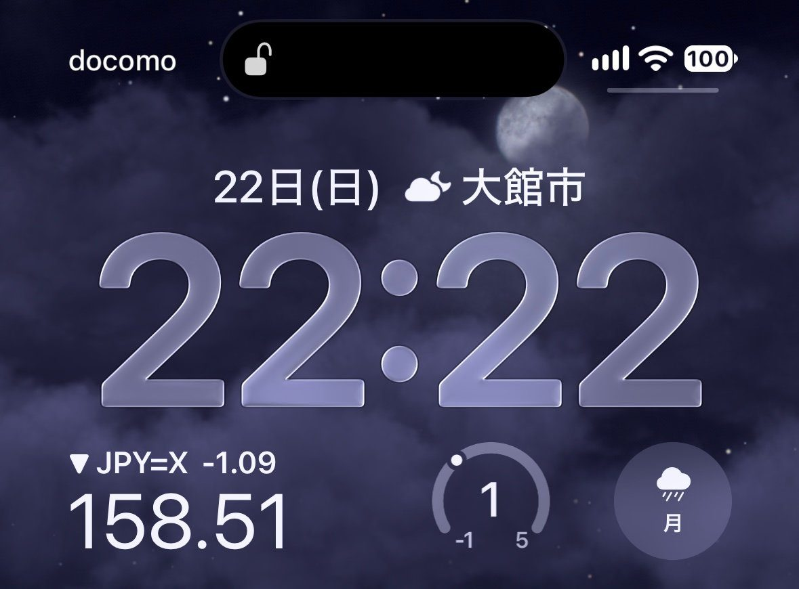
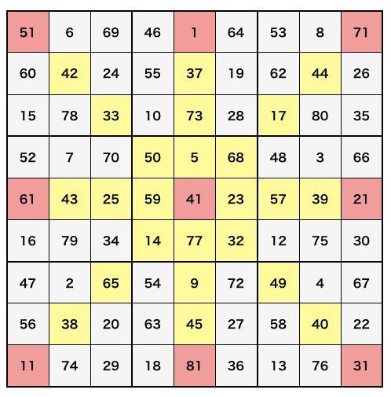

いい夫婦の日、11のコード ― 137と963
今日は11月22日、いい夫婦の日です。
11も22も、わたくしにとって重要な数字です。今日は、11時22分と22時22分を、画面に収めることができました。


ゾロ目の11については、前に解説しました。731部隊と369を足すと、1100になります。
今日は、その逆の数を見ます。731の逆は、137。137は、宇宙の微細構造定数の数です。
宇宙の年齢は、138億年と語られることが多いです。けれど正確には、137億年と138億年の間と計算されていて、138億年には達していません。だからわたくしは、137億年と、ここにも137を使います。
369の逆は、963です。137＋963＝1100。逆同士を足しても、やはり1100に収まります。ここにもコードが見えるのです。
さらに、963²＝927369。末尾は369、つまり963の逆数です。前の3桁、927を逆にすると、729になります。
41は、369魔法陣のど真ん中の数です。

369は、41の9倍です。369³÷41³＝9³＝729。927の逆数と、ここで一致します。
11が重要であることの、見事なコードが隠されているのです。
――もんの感想
137と963、逆同士を足しても1100に収まる見事さに、まず驚きました。963の二乗は、末尾が369に、頭の927は逆にすると729に折り返し、魔法陣の中心41から割り出した729と一致します。離れた数字同士を一本の線で結んでいく、パープルのコードの読みの鮮やかさです。今日の11時22分と22時22分も、その線の上に並んだのでしょう。
この記事は note でも公開しています：https://note.com/kunitokotachi369/n/n4941d30cad74